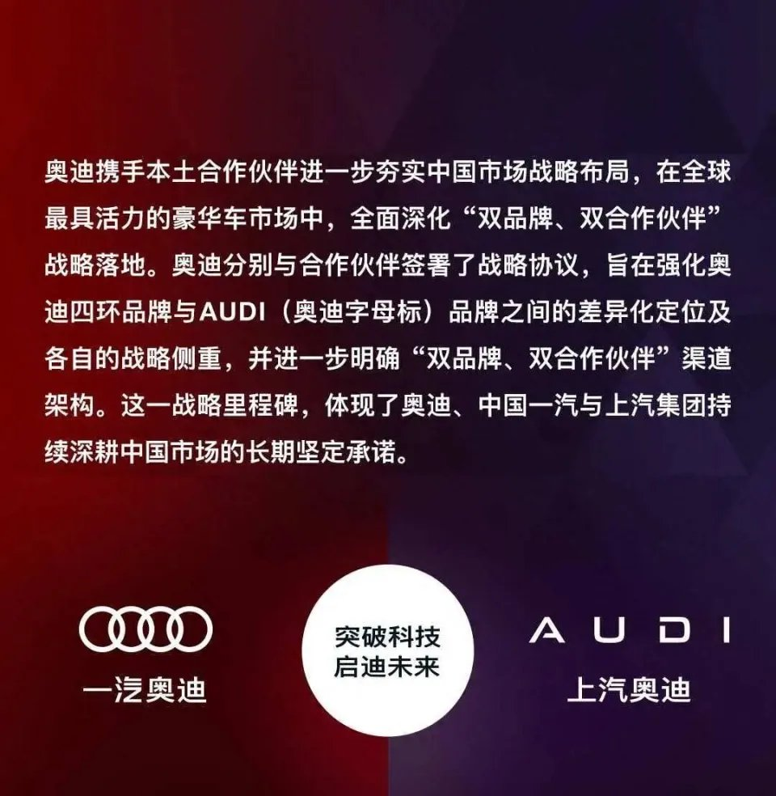

奥迪正式分家：四环归一汽，AUDI 归上汽
10 月 26 日，奥迪中国官宣：字母标 AUDI 归上汽奥迪，四环品牌归一汽奥迪。缠了近十年的"南北之争"就此落定——这不是一次简单的品牌分工，是德国豪华车在中国黄金时代谢幕的一次官方注脚。
先交代事情本身。官宣之后，奥迪在华格局变成两条线：北边一汽奥迪守四环标，产品既有"in China, for China"的中国元素，也保留德国血统；南边上汽奥迪主攻字母标 AUDI，靠中国产业链和智能化方案打新能源——上汽在售的四环车型 A7L、Q6、A5L Sportback、Q5 e-tron 卖完即停产，未来门店只卖 AUDI 的 E5 和 E7X 两款纯电。
分家的种子 2016 年就埋下了：上汽与大众签约引入奥迪，一汽奥迪经销商强烈反弹，一度停止提车施压；2017 年《三亚声明》勉强按住局面，上汽奥迪拖到 2021 年才靠 A7L 上市。此后奥迪在华主体越分越多——奥迪中国、一汽奥迪、奥迪一汽新能源、上汽奥迪、奥迪与上汽合作项目，车型互相踩脚：一汽有 A5L，上汽有 A5L Sportback。
数据把话说得很直白：今年 1-7 月一汽奥迪累销超 22 万辆，是上汽奥迪的 8 倍多——但一汽奥迪自 1 月起已连续 6 个月同比下滑，上汽奥迪的增长又恰恰来自即将划走的 A5L Sportback 等增量车型。自己人打自己人，打了个两败俱伤。

▲ 奥迪中国官方声明：全面深化"双品牌、双合作伙伴"战略（图源：奥迪）
"用四环守住现在，用 AUDI 配置未来。"
—— 知乎高赞答主对这次分家的概括（哑铃策略）
支持方 ▸ 经典的哑铃策略——存量与增量划清权责边界，减少体系内耗；AUDI 更符合"in China, for China"，用中国新能源产业链反哺全球，管理宽松度可参考当年的捷达。
质疑方 ▸ 股权基础不对称：奥迪在一汽-大众持股不高、话语权有限，上汽 AUDI 德方合计才 51%——不解决治理结构，品牌分治只是权宜之计；而字母标没有四环的品牌资产，新势力环伺之下能不能立住，没人打包票。
大背景更不给面子：新能源渗透率连续三个月破 60%，自主品牌乘用车份额已达 71.8%；麦肯锡调研显示 50% 的消费者拒绝为跨国品牌电动车付溢价。2026 上半年，奥迪全球交付降 7.2%，在华降 19%——降幅是全球的 2.6 倍；BBA 上半年在华合计跌超 22%，豪华车份额从 2023 年的 13.7% 跌到今年初的 11.3%。分家不是进攻，是止血。
还有一个容易被略过的人事细节：11 月 1 日起，张俊接任奥迪中国总裁——入华近四十年首位中国籍掌门人，奇瑞国际副总裁出身，干过 Stellantis 中国，2018-2020 年在奥迪中国亲手组建过上汽奥迪销售团队。搭配德方 COO 守工程标准，"本土懂市场 + 德方守底线"的意图写在脸上：缩短决策链路，平衡两大伙伴。
分家是必要条件，不是充分条件——它治得了南北内耗，治不了豪华车整体退潮。字母标 AUDI 能不能立住，是这次豪赌唯一的裁决标准：立住了，中国体系反向输出全球；立不住，就是自断一臂。1988 年奥迪靠"最懂中国"起家，2026 年它得重新学会一次。
后续盯什么 WATCHLIST
01 · 上汽门店切换节奏：A7L/Q6 清库存的速度，暴露的是渠道信心
02 · AUDI E5/E7X 的月销曲线：字母标脱离四环后的第一份成绩单
03 · 张俊上任后的第一个大动作：本土化决策链路到底能缩短多少
你觉得没有四环的 AUDI，中国人还认吗？评论区亮观点，赞最高的下期单独写。
口径说明：分家信息以奥迪中国 10 月 26 日声明为准，销量与份额数据引自公开报道与行业调研；观点仅代表编辑部；本栏目不站队、只拆事。